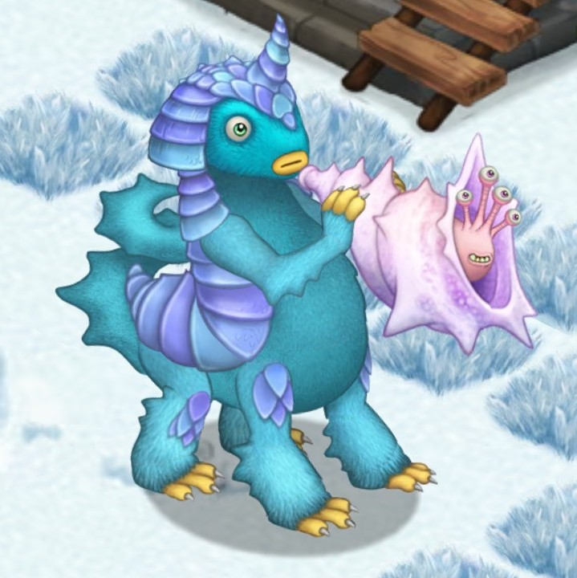

This Mythical shares many traits with a certain Fire Monster, but its preferred habitat couldn't be more different. The masterless Strombonin is a drifter... well and truly, as it drifts upon the ice floes that surround Cold Island. The only company it typically keeps is that of a specialized cold-weather snail called the Strombone whose pallial lungs possess unique musical qualities. Albiet being stoic and reserved itself, the hexapod's presence is unmistakeable when it bellows forth rebellious decibels with the help of its mollusk companion.
